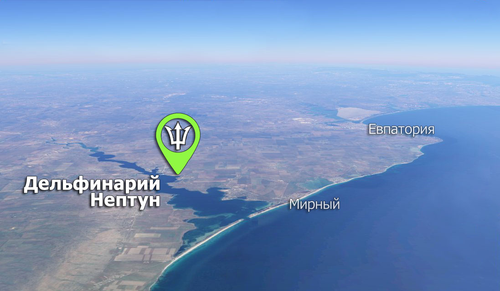

Дельфинарий «Нептун» расположен в 36 км от г.Евпатория, на юго-западном берегу Крыма. Территория дельфинария расположена на берегу озера Донузлав. Самого глубокого соленого озера в Крыму.
Здесь Вы сможете поплавать с Черноморскими дельфинами Афалина.
Плаванье с дельфинами – не только приятное занятие, но и польза для Вашего здоровья.
Все желающие могут полюбоваться этими прекрасными млекопитающими, понаблюдать за их жизнью, процессом кормления и тренировками.
Территория дельфинария обустроена специально для комфортного отдыха всей семьей: обустроенная зона отдыха у воды, шезлонги, навесы, мини-зоопарк, детская площадка, детский бассейн, развлекательная программа для детей, кафе, сувенирная лавка.
Порадуйте себя и своих близких яркими ощущениями от полноценного отдыха на берегу озера Донузлав.
Дельфинарий «Нептун» не проводит шоу с морскими обитателями, но все желающие могут полюбоваться красочной программой в г.Евпатория. Шоу программа с участием черноморских дельфинов, белых китов, морских котиков и львов проходит в Евпаторийском Дельфинарии по адресу: г.Евпатория, ул.Киевская, 19/20